Network Concepts & Descriptives I
Social Network Analysis
First some reminders in
Creating simple networks
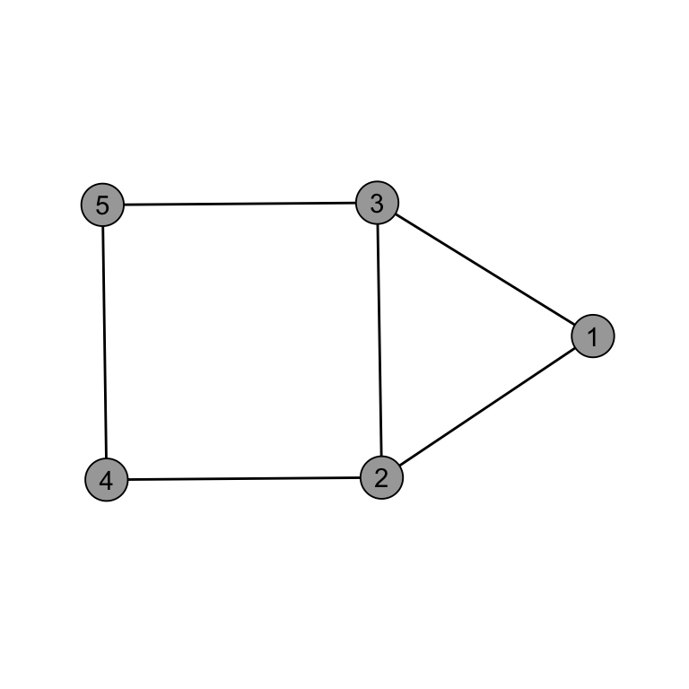
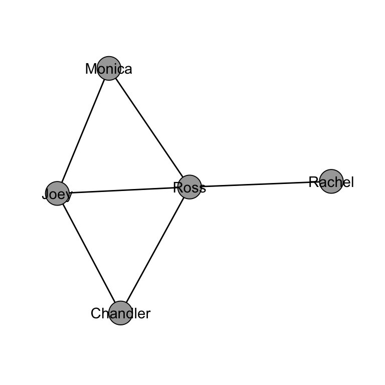
Special Graphs
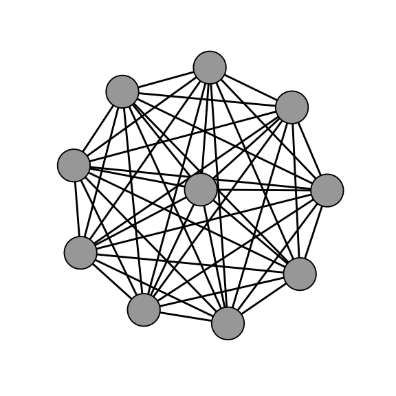
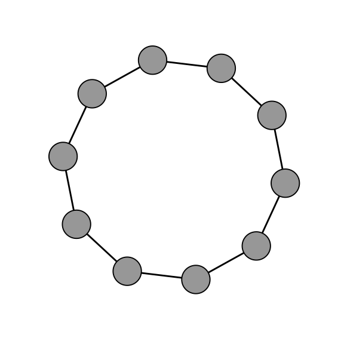
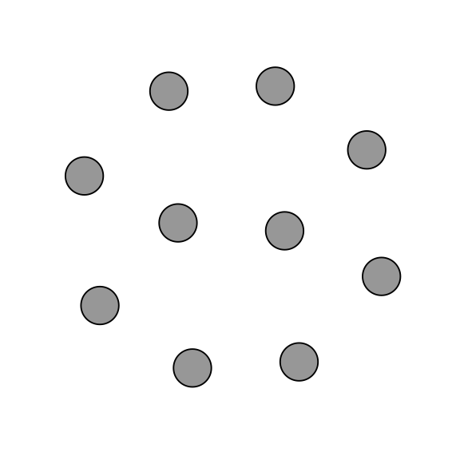
Random Graphs
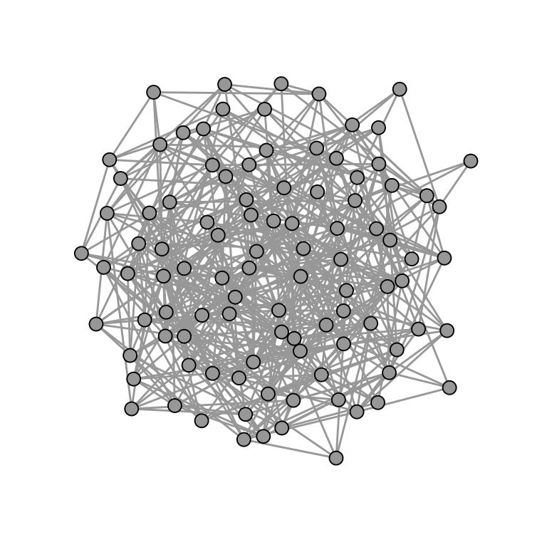
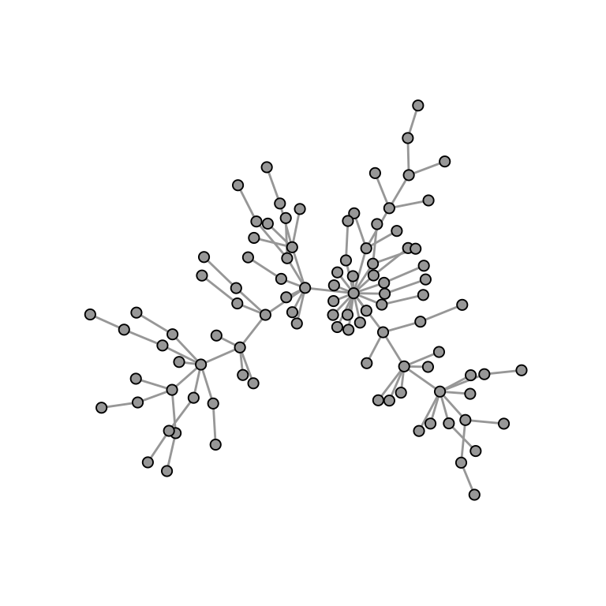
igraph Objects
library(netUtils)
str(g2)
#> -----------------------------------------------------------
#> UNNAMED NETWORK (undirected, unweighted, one-mode network)
#> -----------------------------------------------------------
#> Nodes: 5, Edges: 6, Density: 0.6, Components: 1, Isolates: 0
#> -Vertex Attributes:
#> name(c): Joey, Chandler, Monica, Ross, Rachel ...
#> ---
#> -Edges:
#> Joey--Chandler Joey--Monica Joey--Ross Chandler--Ross Monica--Ross
#> Ross--RachelAttributes
node attributes
Attributes
str(g2)
#> ---------------------------------------------------------
#> UNNAMED NETWORK (undirected, weighted, one-mode network)
#> ---------------------------------------------------------
#> Nodes: 5, Edges: 6, Density: 0.6, Components: 1, Isolates: 0
#> -Vertex Attributes:
#> name(c): Joey, Chandler, Monica, Ross, Rachel ...
#> gender(c): M, M, F, M, F ...
#> ---
#> -Edge Attributes:
#> weight(n): 4, 2, 4, 2, 5, 2 ...
#> ---
#> -Edges:
#> Joey--Chandler Joey--Monica Joey--Ross Chandler--Ross Monica--Ross
#> Ross--RachelNetwork Representations: Adjacency Matrix
Network Representation: Edgelist
more efficient for sparse data (null edges aren’t stored)
Networks from Matrices and Lists
adjacency matrix
edgelist
Reading Network Data
Data is already in R (e.g. networkdata)
No extra work
Data was processed in another SNA tool
Some extra work (with some issues)
Data is in a csv/spreadsheet/..
read.table(), read.csv(), readxl, readr,…
Preparing Network Data
adjacency matrix
Does the matrix have row/col names?
Is the network directed/undirected?
Preparing Network Data
edgelist
Preparing Network Data
some stepping stones
- Are weights actually weights or different types of edges?
- You can’t always tell from an edgelist if the network is directed
- Isolated nodes are lost if an edgelist is used
Preparing Network Data with Attributes
Organize network data in two separate files
| from | to |
|---|---|
| Arizona Robbins | Leah Murphy |
| Alex Karev | Leah Murphy |
| Arizona Robbins | Lauren Boswell |
| Arizona Robbins | Callie Torres |
| Erica Hahn | Callie Torres |
| Alex Karev | Callie Torres |
| name | sex | birthyear |
|---|---|---|
| Addison Montgomery | F | 1967 |
| Adele Webber | F | 1949 |
| Teddy Altman | F | 1969 |
| Amelia Shepherd | F | 1981 |
| Arizona Robbins | F | 1976 |
| Rebecca Pope | F | 1975 |
From Graph Theory to Network Concepts to Descriptives
- Social network concepts and their theoretical underpinnings
- Span several branches of the social sciences (e.g. sociology, psychology, criminology, economy, etc)
these are crucial for understanding
- The presence and absence of ties
- How networks emerge and function
- Which social processes and phenomena are implied
- How to connect posed research question to network research design
Homophily
Actors are more likely to connect to other actors with similar attribute
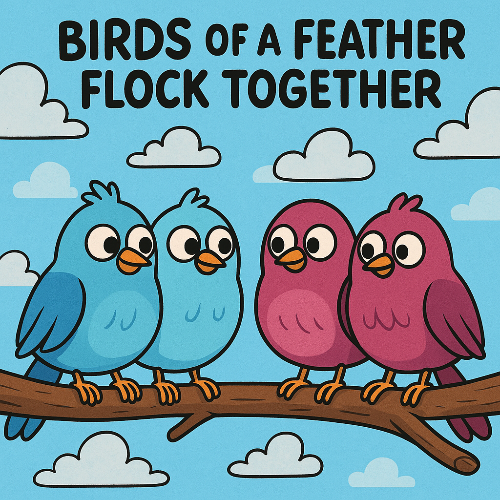
The homophily principle
The phenomena of attribute similarity producing ties among actors
people’s personal networks are homogeneous with regard to many sociodemographic, behavioral, and intrapersonal characteristics [McPherson et. al.,2001, Link to paper]
Homophily
Actors are more likely to connect to other actors with similar attribute
The homophily principle
The phenomena of attribute similarity producing ties among actors
Also know as assortativity
The opposite: heterophily
Homophily
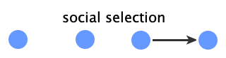
the tendency for people to connect to others with similar
- behavior/beliefs/attributes
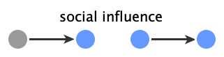
the tendency for people to change their
- behavior/beliefs/attributes
according to the
- behavior/beliefs/attributes
of those that they are tied to
Social Selection vs. Social Influence
YES!
by logical reasoning (fixed covariates)
- for example ethnicity, age, etc
by theory
- we can make an a priori choice
but always be ware of confounders!
- proximity/social context (foci)
- contextual factors
- anything that affects both attributes and ties
Assortativity in
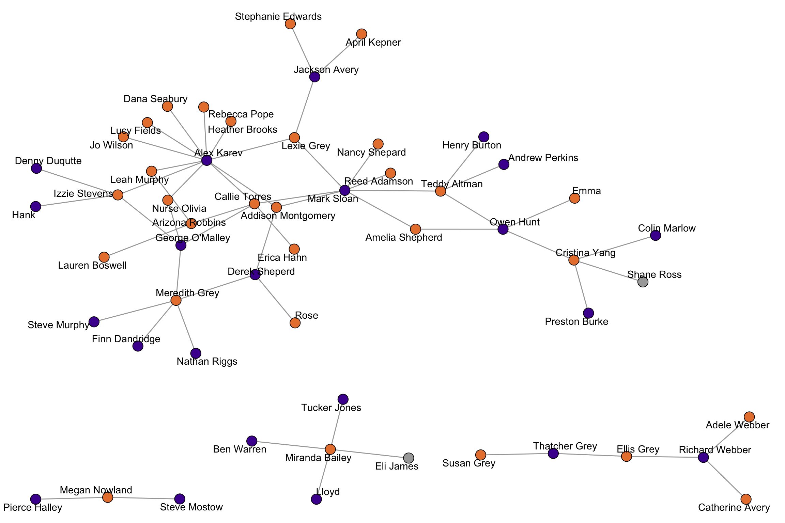Assortativity in
Measures the level of homophily based on some node labeling or values.
Assortativity based on numerical attribute
A negative value means that nodes with high degree tend to connect to nodes with low degree.
Assortativity in
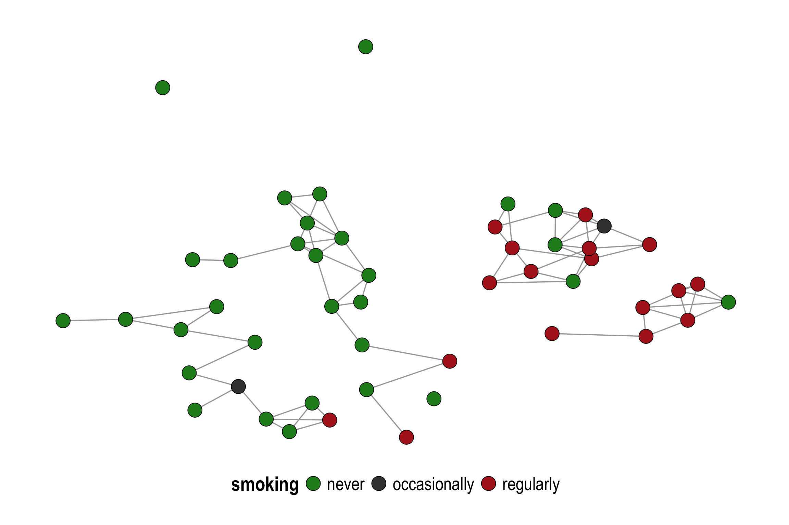Assortativity in
Measures the level of homophily based on some node labeling or values.
Assortativity based on nominal attribute
A high value means that connected nodes tend to have the same labels. In this case the smoking behavior.
Reciprocity and Social Exchange
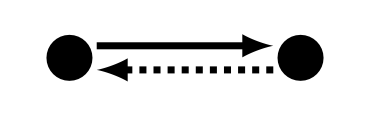
Reciprocity
when a tie between two actors in a directed network is reciprocated in the reverse direction
crucial concept in social exchange theories:
social processes arising from actors’ cost and benefit analysis of social outcomes in terms of opportunities and constraints
Reciprocity and Social Exchange
- friendship network: ties are likely reciprocated when it reflects trust and emotional support
- hierarchical network (e.g.leadership networks): reciprocity is unlikely
Reciprocity and Social Exchange
The norms of reciprocity (Gouldner, 1960) Link to paper
Obligation to reciprocate depends on value of benefit of reciprocating
Benefits are more valued (higher chance of reciprocating) when
- the recipient is in greater need
- the donor cannot afford to give the benefit
- the donor provide the benefit in the absence of self-interest
- the donor was not required to give the benefit
Reciprocity in
About 76% of edges are reciprocated in the network
Reciprocity in
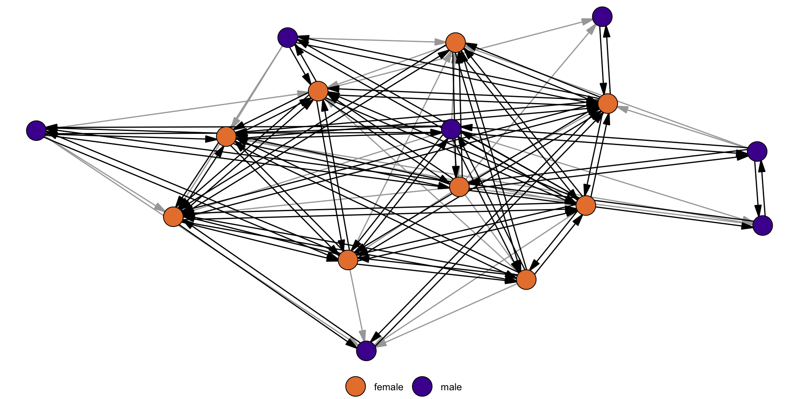Transitivity
Transitivity/Triadic Closure
when looking at three actors A, B and C, if actors A and B are connected, and A and C are connected, then actors B and C are also connected
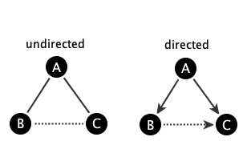
the friend of my friend is my friend
Triad Census
The triad census consists of a classification of all directed triads into one of 16 different categories. The distribution can be compared against null models to test for the presence of configural biases (e.g., transitivity bias)

Triad Census in
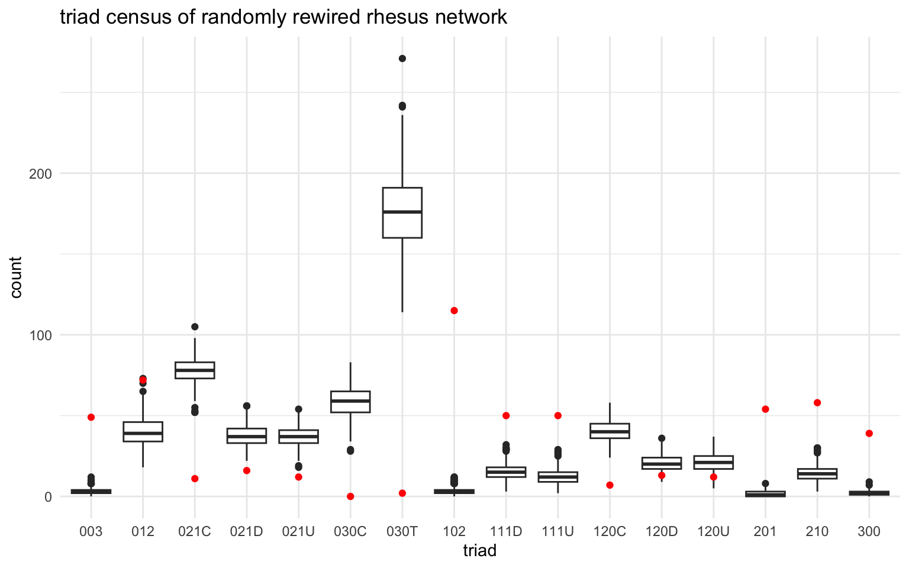Transitivity
Transitivity is also a measure of the degree to which nodes in a graph tend to cluster together. This is also called the clustering coefficient.
local
gives an indication of the embeddedness of single nodes
global
indication of the clustering in the network
\[ \frac{3 \times \text{number of triangles} }{\text{total number of triplets}} \]
Transitivity in
round(transitivity(g, type = "local", isolates = "zero"),2)
#> 1 2 3 4 5 6 7 8 9 10 11 12 13 14 15 16
#> 0.40 1.00 0.00 0.50 0.67 1.00 0.00 0.00 0.53 0.00 0.40 1.00 0.33 0.33 0.00 0.33
#> 17 18 19 20 21 22 23 24 25 26 27 28 29 30 31 32
#> 0.00 0.40 0.33 0.43 0.30 0.38 0.31 0.00 0.00 0.27 0.33 0.00 0.00 1.00 0.17 0.40
#> 33 34 35 36 37 38 39 40 41 42 43 44 45 46 47 48
#> 0.70 1.00 0.33 0.70 0.67 0.29 0.20 0.20 0.47 0.60 0.27 0.00 0.70 0.50 0.60 0.47
#> 49 50 51 52 53 54 55 56 57 58 59 60 61 62 63 64
#> 0.67 0.57 0.33 0.57 0.67 0.27 0.36 0.67 0.60 1.00 0.50 0.60 0.67 0.50 0.80 0.70
#> 65 66 67 68 69 70 71 72 73
#> 0.60 0.71 0.87 0.24 0.71 0.38 0.49 0.00 0.00In empirical networks, we often observe a tendency towards high transitivity (“the friend of a friend is a friend”)
What do you think is the (local/global) transitivity of greys?
Transitivity
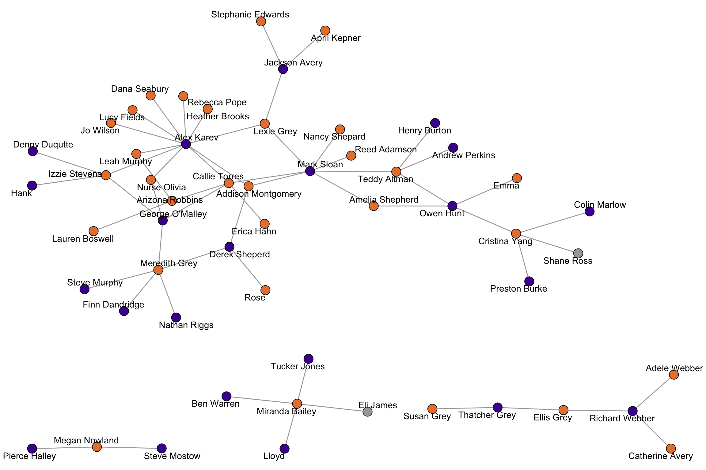Transitivity
The value itself is not always enough to judge the level of transitivity of a network. We should also check if it deviates significantly from what would be expected by randomness (more on this later in the course)
Structural Balance
A special case of transitivity applied to signed networks
- Fritz Heider: underpinnings of structural balance theory (1940s)
- Dorwin Cartwright & Frank Harary: formalised with graph theory (1950s)
Structural Balance
A triangle is balanced if
- all ties are positive (“the friend of a friend is a friend”)
- only one tie is positive (“the enemy of my enemy is my friend”)
The remaining configurations are said to be unbalanced.

Structural Balance
Extension: A network is balanced if i.a., it can be partitioned into two vertex subsets, such that intra-group edges are all positive and inter-group edges are all negative.
Degree distribution
The degree of a node in a network is the number of connections it has to other nodes.
The degree distribution is the probability distribution of the degrees over the whole network.
Empirical degree distributions are generally right skewed:
(many nodes have a few connections and few have many)
- “preferential attachment”
- “Matthew effect”
- “the rich get richer”
Scale Free Networks
A scale-free network is a network whose degree distribution follows a power law (asymptotically). The fraction \(P(k)\) of nodes in the network having degree \(k\) is given by \(P(k) \sim k^\boldsymbol{-\gamma}\) 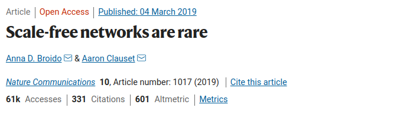
Degree distribution
Degree distribution are informative about
homogeneity/heterogeneity
the extent to which all actors have similar or dissimilar degreescentralization
the extent to which the network is dominated by a single actor
(the extent to which a network looks like a star network)
Degree distribution in
Density in
The density of a network is defined as the fraction of the potential edges in a network that are actually present.
Small World Phenomenon
One can find a short chain of acquaintances (i.e. a shortest path), often of no more than a handful of individuals, connecting almost any two people on the planet.
- Milgram’s small-world experiment: 6 (“6 degrees of separation”)
- Average distance between users on Facebook (2016): 4.57
Small World Experiment (Milgram)

.gif){kind=link}
Erdős number
Paul Erdős published ~1525 papers with ~500 collaborators
The Erdős number of an individual is their distance to Paul Erdős in the co-authorship network
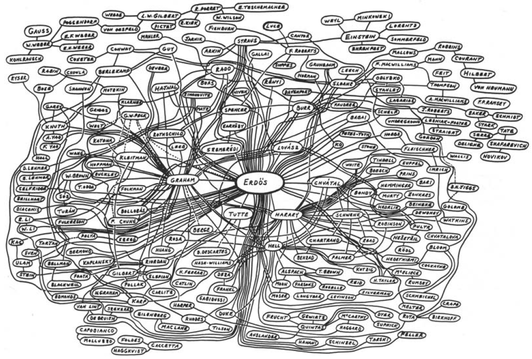
Bacon number
The Bacon number of an actor is their distance to Kevin Bacon in the movie co-appearance network.
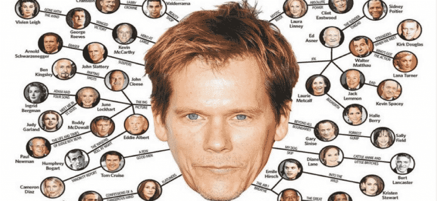Erdős-Bacon-Sabbath number
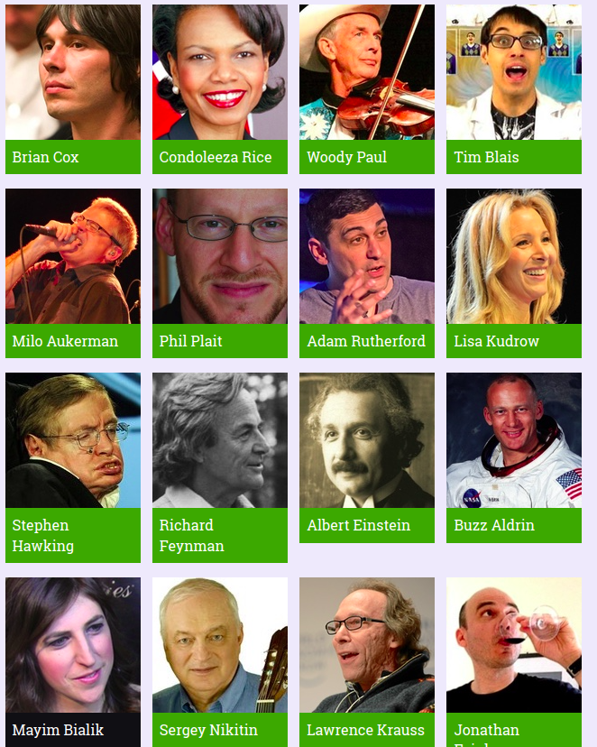
Zlatan number
The Zlatan number is the distance of football players to Zlatan Ibrahimovic in the “squad network” (blog post)
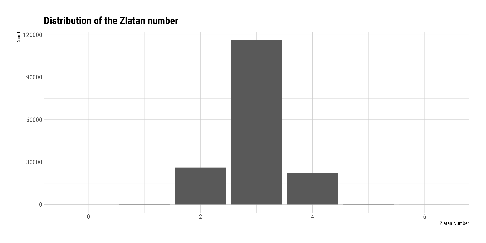
Diameter
The length of the longest shortest path is called the diameter of the network.
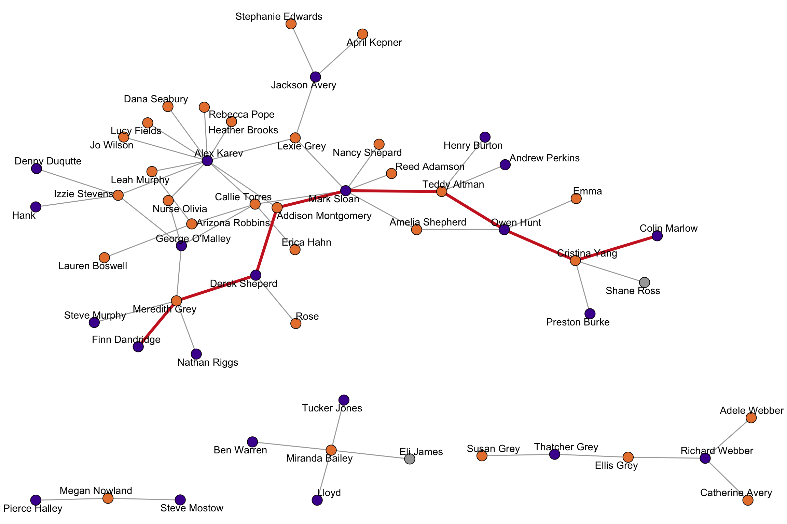Shortest Paths in
A shortest path is a path that connects two nodes in a network with a minimal number of edges. The length of a shortest path is called the distance between two nodes.
shortest_paths(greys,from = "Alex Karev",to = "Owen Hunt",output = "vpath")
#> $vpath
#> $vpath[[1]]
#> + 5/54 vertices, named, from f7716f1:
#> [1] Alex Karev Addison Montgomery Mark Sloan Teddy Altman
#> [5] Owen Hunt
#>
#>
#> $epath
#> NULL
#>
#> $predecessors
#> NULL
#>
#> $inbound_edges
#> NULLShortest Paths in
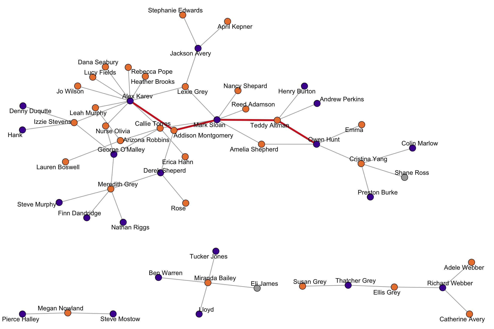Distances in
distances(greys)[1:5,1:5]
#> Addison Montgomery Adele Webber Teddy Altman Amelia Shepherd
#> Addison Montgomery 0 Inf 2 2
#> Adele Webber Inf 0 Inf Inf
#> Teddy Altman 2 Inf 0 2
#> Amelia Shepherd 2 Inf 2 0
#> Arizona Robbins 3 Inf 3 3
#> Arizona Robbins
#> Addison Montgomery 3
#> Adele Webber Inf
#> Teddy Altman 3
#> Amelia Shepherd 3
#> Arizona Robbins 0The Grey’s Anatomy network is disconnected (4 connected components)
Next Time
Centrality
Connectivity and Social Cohesion
Network Positions and Social Roles
Social Selection vs. Social Influence
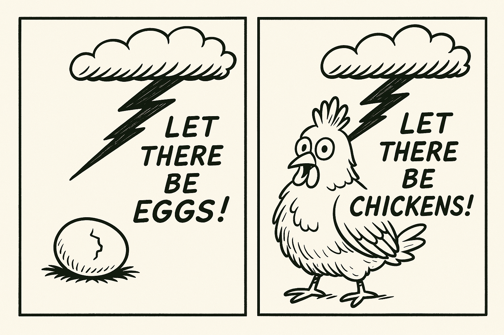can we separate social influence and selection for cross-sectional data?